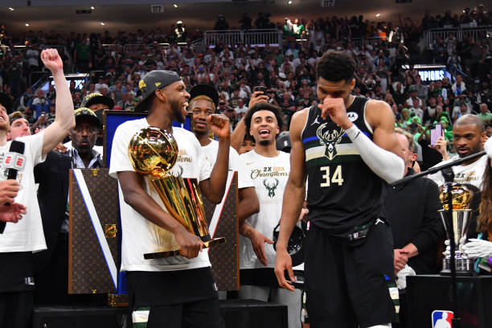
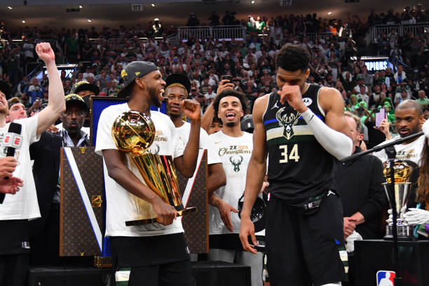

Milwaukee Bucks
Bienvenue sur le site officiel des Milwaukee Bucks, l'une des franchises les plus emblématiques de la NBA. Découvrez les dernières nouvelles, les matchs à venir, et bien plus encore !
Bienvenue sur le site officiel des Milwaukee Bucks, l'une des franchises les plus emblématiques de la NBA. Découvrez les dernières nouvelles, les matchs à venir, et bien plus encore !
Milwaukee Bucks vs. Houston Rockets - 19 Novembre 2024
Milwaukee Bucks vs. Chicago Bulls - 21 Novembre 2024
Milwaukee Bucks vs. Indiana Pacers - 23 Novembre 2024
Milwaukee Bucks vs. Charlotte Hornets - 24 Novembre 2024
 
